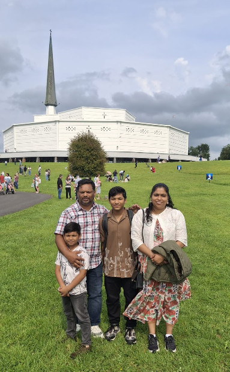

Justin Jijo
Transition Year 2025–26 Portfolio
Exploring studies, experiences and creative projects from Gortnor Abbey in a cinematic, modern presentation. Tap a subject card to reveal its full journey.
About Me
I am a Transition Year student at Gortnor Abbey with a passion for coding, multimedia and creative projects. I enjoy editing photos and videos, building Arduino devices, and exploring how technology can connect with storytelling.
- School: Gortnor Abbey, Crossmolina, Co. Mayo
- Year: Transition Year 2025-26
- Family: Mother works at Sonas Nursing Home; father is a web developer; younger brother in 3rd class.
- Highlights: Microsoft DreamSpace Ambassador Programme and personal growth.
Skills

Core Subjects
Core subject cards show a quick preview before opening the full learning story.
Rotational Subjects
Rotational subjects offer broader experiences across creative, scientific, and practical classes.
Work Experience
A static summary of the placements, responsibilities and skills gained.
💊 Molloys Pharmacy
Location: Garden Street, Ballina · First Placement
Worked primarily in stock management — organising, checking, and managing inventory to keep the pharmacy well-stocked and efficient. Also produced price tag stickers and carried out regular stock checks.
Learned responsibility, organisation, and what it means to work in a professional retail environment.
☕ Jimmy's Coffee Shop
Second Placement
Worked as a Traffic Manager — helping manage the flow of customers during busy periods. Also handed out coffees, stocked shelves with products, and kept the area clean and tidy.
Learned how important it is to stay calm and organised when things get busy, and how every role keeps a business running smoothly.
🏥 Sonas Nursing Home
Third Placement
Observed staff working with residents who have various conditions including dementia — watching daily routines, communication methods, and person-centred care tailored to each individual.
Saw how patience, empathy, and good communication make a real difference in nursing home work.
Modules
Special modules are shown here with their focus, learning and applied skills.
The Masked Singers
A fun mix of stage performance, creativity, and digital voting technology.
The Masked Singers
What I Did
I performed in The Masked Singers, a fun musical show featuring 9 masked singers who danced to different songs while portraying famous celebrities hidden in inflatable costumes. I created a survey website for the audience to vote and guess our identities based on performance hints.
My Role
I played Tom Cruise wearing a shark inflatable costume, dancing to "Don't Stop Me Now" by Queen. After all performances, we had an exciting unmasking ceremony where we revealed our true celebrity identities.
What I Learned
This experience taught me how to combine dance choreography, costume performance, and tech skills (building the voting website). I learned the challenge of performing energetically while staying in character through bulky inflatables and engaging an audience with clever hints.


Skills I Developed
- Web development — Built the audience voting survey site
- Performance confidence — Dancing in costume to a live audience
- Team coordination — Rehearsing with 9 performers and timing the show
More Activities
Additional events and experiences from the year, presented in a single interactive section.
Detail
Explore the subject and its work in full page mode.